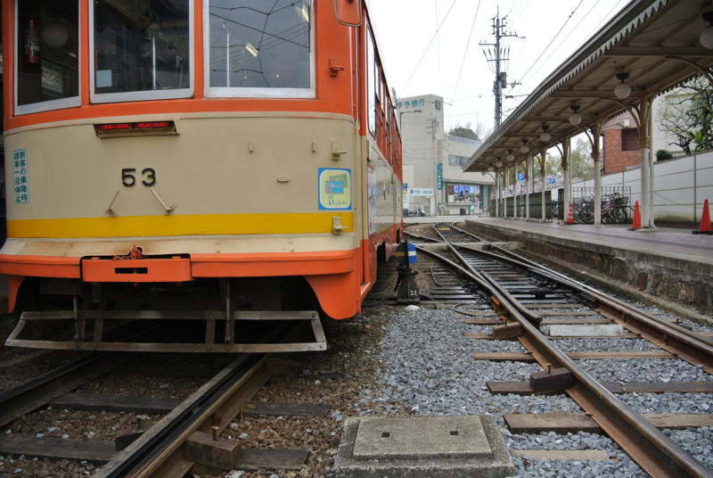
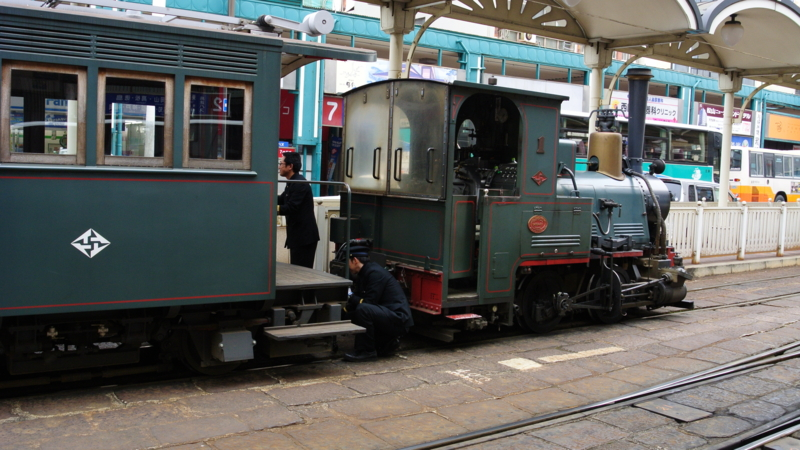
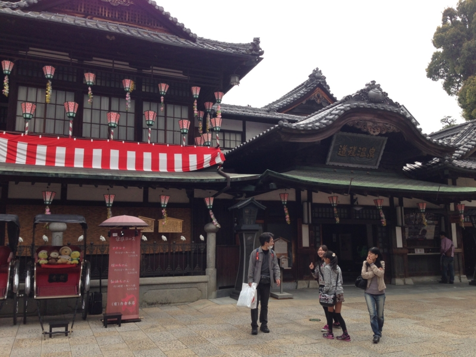
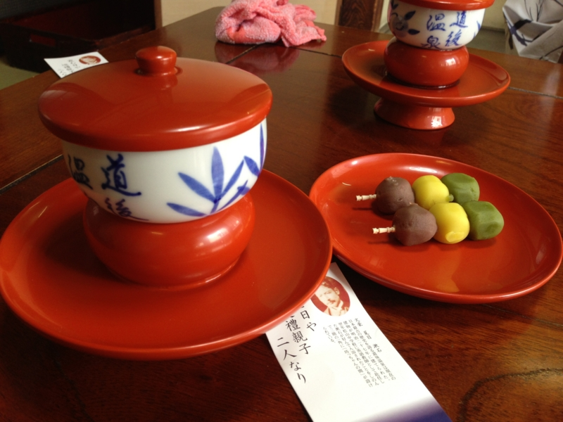
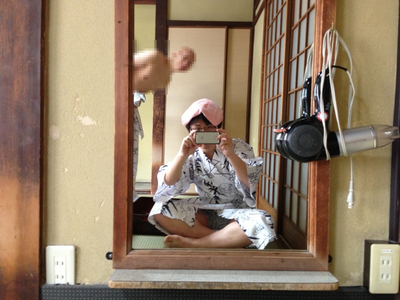
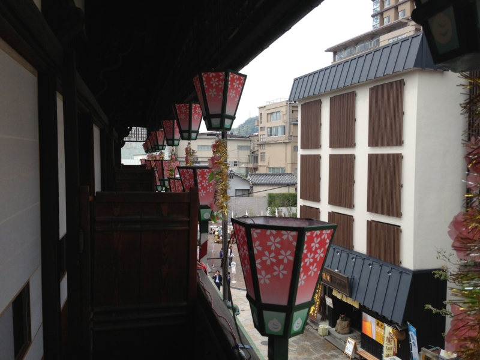

道後温泉へ行ってきたった
公開日：

みんなはどんな街に住みたいかな？ たとえば、『魔女の宅急便』で出てくるみたいな、時計台と海のある街っていいですよね。
ボクの場合は、
- 路面電車の走ってる街大好き！
- カッコいいお城のある街が好き！
- 賑やかだけど多すぎず、大きいけれどコンパクトな街が好き！
- なんとなく歴史があって文化的な街が好き。
路面電車こそないけど、京都なんかはだいぶ好きな街。福井に行ったときも路面電車あってよかったな。仙台もカッコいい。まぁ、でも今んところは松山が一番いいと思う。だってな……
- 温泉がある街がいい！
温泉は正義だ！ というわけで――
道後温泉へ行ってきたった

松山の市電（って呼んでるけど、伊予鉄だな）には、2台だけ“坊っちゃん列車”というのが走ってる。これは開通当時の列車を再現したものだそうで、蒸気機関がディーゼルになっているだけ。乗り心地はともかく、情緒はあってなかなかよろしい。
松山市駅で人力による列車の方向転換がみられるのも、鉄成分の高い人にはたまらない。
道後温泉までは、伊予鉄で15分か20分程度か。それほど遠くない。東京で言えば、市川から秋葉原へ出る時よりも気軽。地面を走るカジュアルさと、バスよりも安定したダイヤが市電の魅力だなぁ。

道後温泉駅で降りて、商店街を抜けると、ぽっこりと空間が空いていて、そこに古い建物がどーんと建っている。これが道後温泉の「本館」なのだそう。

最初はシステムがよくわかってなかったが、3ランクに分かれていて
- 1階：普通の公衆浴場っぽい位置づけ？ 安い。
- 2階：1時間1000円。畳敷きの大広間で休憩できる。
- 3階：80分1500円。お風呂の後は個室で休憩できる。茶菓子も出る。
ってな感じなのかな。2階以上は、天皇陛下がお使いになる部屋・浴場・便所の見学ができる。ちなみに、便所は一度も使われていないのだそうだ。モッタイナイから朕が使ってやろうかと一瞬思ったけれど、たぶんめちゃくちゃ怒られるからやめておいた。

今回は @jz5 と3階の個室をチョイス。温泉そのものにはそれほど特筆すべきことがなにもないが、なかなかのんびりできて、それがとてもいい。

かなり老朽化が進んで、建て替えが問題になっているらしいけれど、この風情は残しておいてもらいたいものだ。